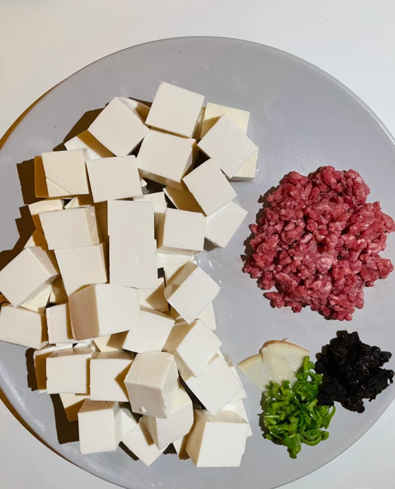
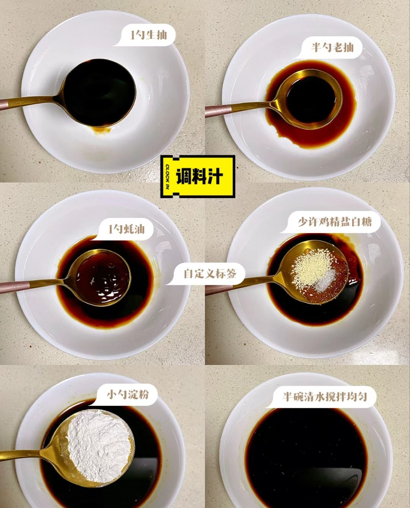
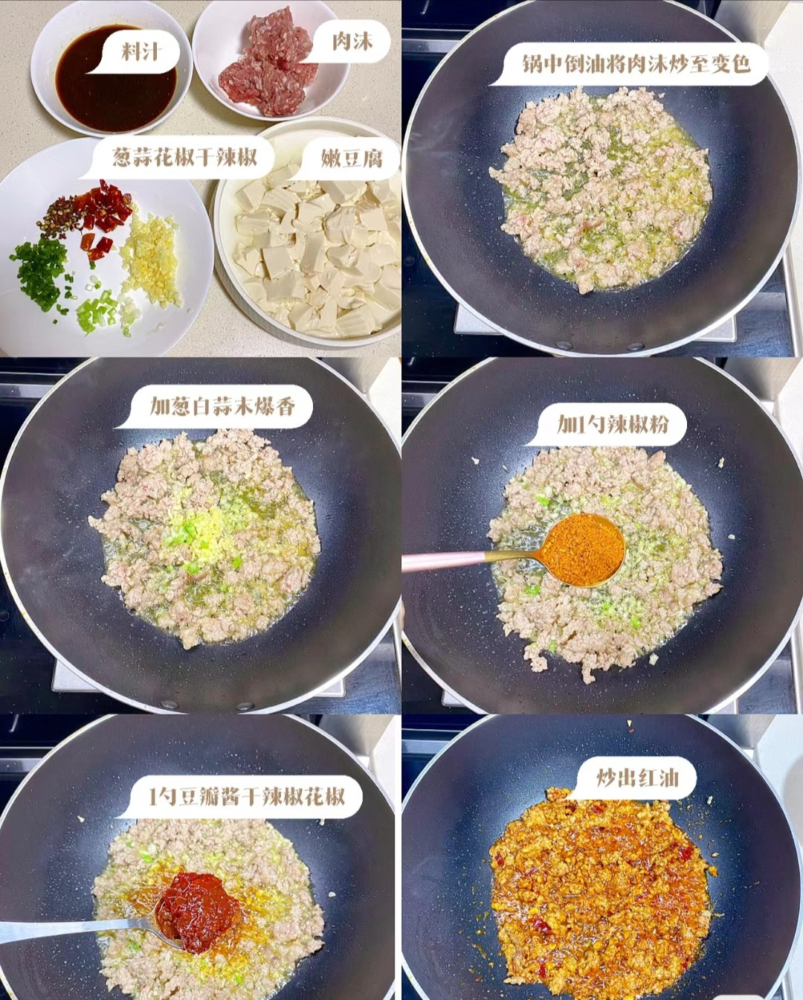
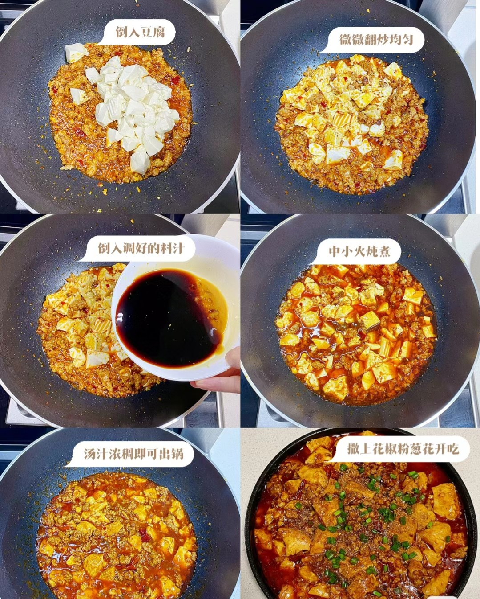
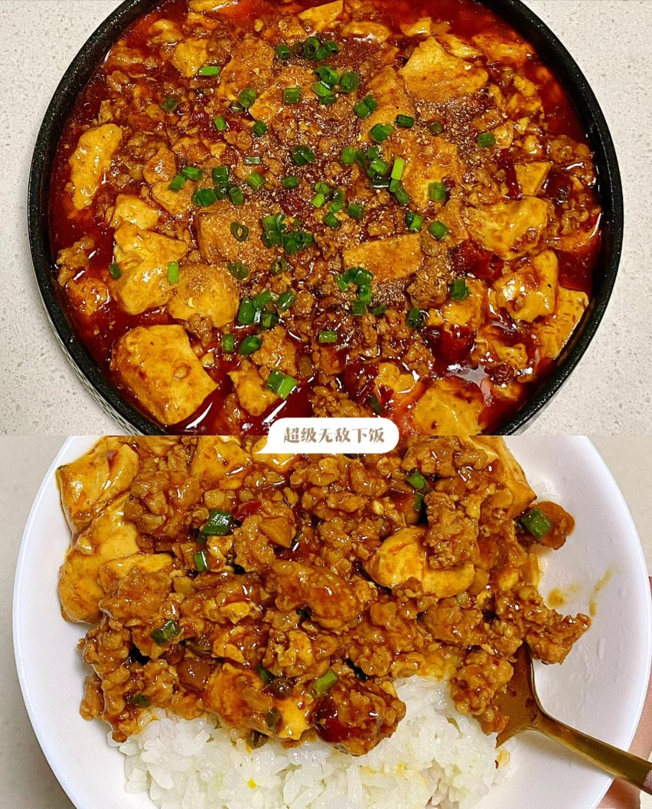

1.备好材料:准备好一块上好的豆腐切成方块状不要太大不要太小，在准备少量瘦肉切成肉丁

2.拿出一个碗加入一勺生抽，半勺老抽，一勺耗油，少许或以个人口味加入鸡精盐白糖，小勺淀粉，半碗清水搅拌均匀

3.锅热倒油肉丁炒至变色加入葱（姜）蒜爆香，加入一勺辣椒面，一勺豆瓣酱，一勺干辣椒面和花椒，翻炒至炒出红油

4.紧随其后加入备好的豆腐，轻轻翻炒不要把豆腐弄坏了，随后加入调好的料汁，中小火炖煮，汤汁浓稠即可出锅，撒上花椒粒和葱花，完成
做菜和做其它事情一样，主要是实践。做菜，做饭看上去很简单，如果你有机会看高级厨师在那里操作，你怎么看，怎么觉得简单，整个操作有条不紊，真的是干脆麻利的，也不觉得很难，但当你自己做的时候就会一步慌，下步错，步步搞砸

下一个在这->红烧肉
上一个在这->青椒肉丝